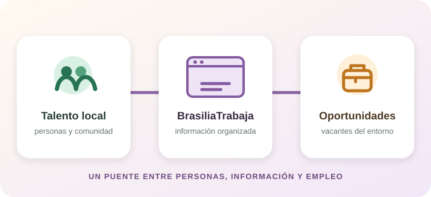

¿A quién busca apoyar?
A estudiantes, egresados, familias y habitantes de Bosa que consultan oportunidades, y a empleadores locales que quieren difundir vacantes.


BRASILIATRABAJA · PROPÓSITO DEL PROYECTO
Diseñar una plataforma digital comunitaria que permita visibilizar y facilitar el acceso a ofertas laborales para profesionales y no profesionales del Colegio Brasilia Bosa y la comunidad de Bosa.

A estudiantes, egresados, familias y habitantes de Bosa que consultan oportunidades, y a empleadores locales que quieren difundir vacantes.
Un espacio digital que organice la consulta y publicación de ofertas con recorridos comprensibles para candidatos y empleadores, desde computador o celular.
Mediante un prototipo, pruebas de funcionamiento y comentarios de participantes. La evaluación servirá para identificar mejoras; no representa una garantía de contratación.